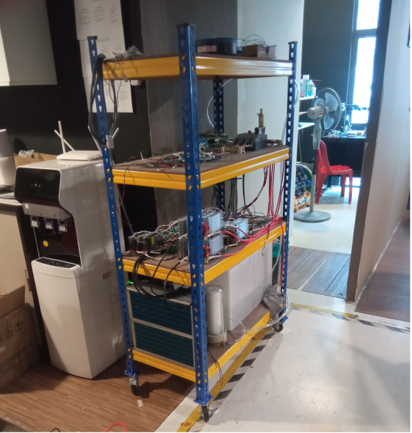
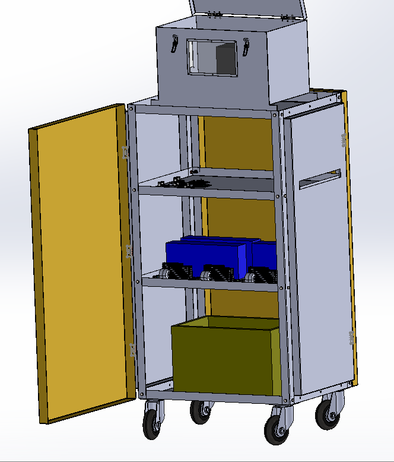
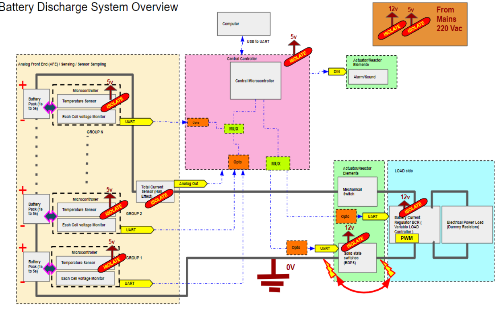
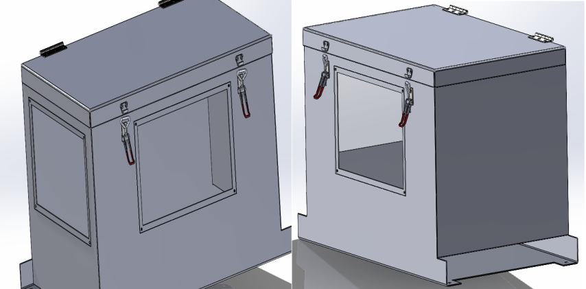
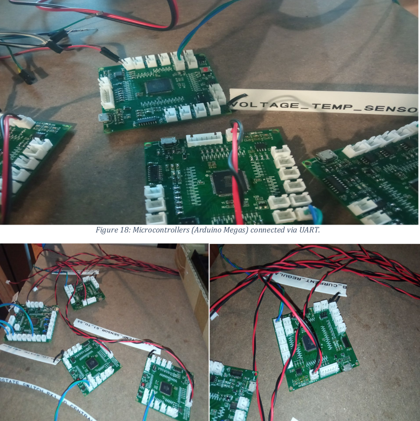

Battery Discharge Rig (2023)


Overview
As part of my job as an engineering intern at Alphaswift Industries, one of the projects I worked on was the design of a battery discharge rig. I was responsible for refining the mechanical design, soldering and electrical integration and further developing the firmware for the system.The discharge rig would test the perfomance of batteries and also discharge the drone batteries while not in use for safety reasons.
 
Some other tasks were solding Battery Current Regulators (BCRs) and PCBs, mostly having surface-mount devices(SMDs). I also soldered eight custom made Arduino Megas that would manage the system's control logic. Although I cannot disclose much information about the design features, this overview summarises the whole system, but it would later undergo many future iterations and modifications.

A battery box I designed would be used to house the batteries during the discharge tests. Fire-resistant materials like steel and tempered glass were used to isolate the battery in case of thermal runaway or fire incidents.

Ensuring reliable data communication between the Arduino MCUs and the central control unit was quite a challenge. I engaged in troubleshooting UART communication issues and debugging tools like oscilloscope to identify and fix data transmission failures. I contributed to the development and testing of the temperature and voltage sensing circuits, to monitor battery's condition during discharge. The temeperature was made using an NTC (Negative Temperature Coefficient) thermistor and the voltage sensing was done using a voltage divider circuit. The data was then sent to the central control unit for processing and display. The control system was developed using a PID control algorithm. so as to adjust the current draw to keep the battery within safe operating limits.

For more details, you can view the full project on GitHub or download the project report:
Project information
- Category Engineering Internship
- Client Alphaswift Industries
- Project date June 2023 - September 2023
- Visit Website